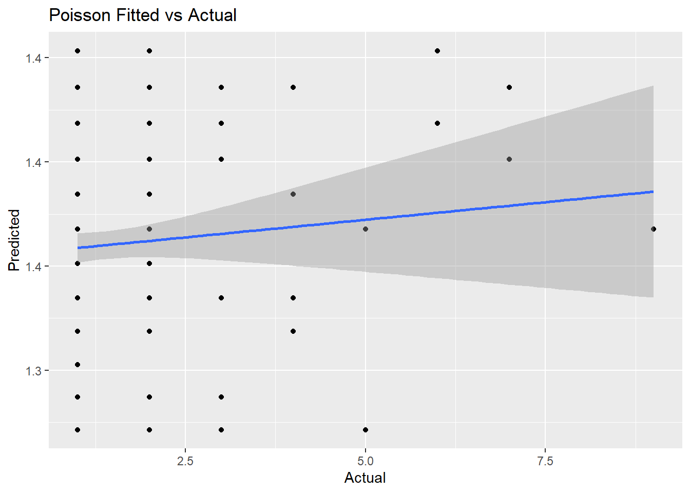

8.6 Summary
Okay, I’m going to tally up the results! For the classification division, the winner is the manual classification tree! Gradient boosting made a valiant run at it, but came up just a little short.
rbind(data.frame(model = "Manual Class", Acc = round(oj_model_1b_cm$overall["Accuracy"], 5)),
data.frame(model = "Class w.tuneGrid", Acc = round(oj_model_3_cm$overall["Accuracy"], 5)),
data.frame(model = "Bagging", Acc = round(oj.bag.acc, 5)),
data.frame(model = "Random Forest", Acc = round(oj.frst.acc, 5)),
data.frame(model = "Gradient Boosting", Acc = round(oj.gbm.acc, 5))
) %>% arrange(desc(Acc))## model Acc
## 1 Manual Class 0.85915
## 2 Gradient Boosting 0.85446
## 3 Class w.tuneGrid 0.84507
## 4 Bagging 0.82629
## 5 Random Forest 0.82629And now for the regression division, the winnner is… gradient boosting!
rbind(data.frame(model = "Manual ANOVA", RMSE = round(carseats_model_1_pruned_rmse, 5)),
data.frame(model = "ANOVA w.tuneGrid", RMSE = round(carseats_model_3_pruned_rmse, 5)),
data.frame(model = "Bagging", RMSE = round(carseats.bag.rmse, 5)),
data.frame(model = "Random Forest", RMSE = round(carseats.frst.rmse, 5)),
data.frame(model = "Gradient Boosting", RMSE = round(carseats.gbm.rmse, 5))
) %>% arrange(RMSE)## model RMSE
## 1 Gradient Boosting 1.40243
## 2 Random Forest 1.75811
## 3 Bagging 1.93279
## 4 ANOVA w.tuneGrid 2.29833
## 5 Manual ANOVA 2.38806Here are plots of the ROC curves for all the models (one from each chapter) on the same graph. The ROCR package provides the prediction() and performance() functions which generate the data required for plotting the ROC curve, given a set of predictions and actual (true) values. The more “up and to the left” the ROC curve of a model is, the better the model. The AUC performance metric is literally the “Area Under the ROC Curve”, so the greater the area under this curve, the higher the AUC, and the better-performing the model is.
library(ROCR)
# List of predictions
oj.class.pred <- predict(oj_model_3, oj_test, type = "prob")[,2]
oj.bag.pred <- predict(oj.bag, oj_test, type = "prob")[,2]
oj.frst.pred <- predict(oj.frst, oj_test, type = "prob")[,2]
oj.gbm.pred <- predict(oj.gbm, oj_test, type = "prob")[,2]
preds_list <- list(oj.class.pred, oj.bag.pred, oj.frst.pred, oj.gbm.pred)
#preds_list <- list(oj.class.pred)
# List of actual values (same for all)
m <- length(preds_list)
actuals_list <- rep(list(oj_test$Purchase), m)
# Plot the ROC curves
pred <- prediction(preds_list, actuals_list)
#pred <- prediction(oj.class.pred[,2], oj_test$Purchase)
rocs <- performance(pred, "tpr", "fpr")
plot(rocs, col = as.list(1:m), main = "Test Set ROC Curves")
legend(x = "bottomright",
legend = c("Decision Tree", "Bagged Trees", "Random Forest", "GBM"),
fill = 1:m)